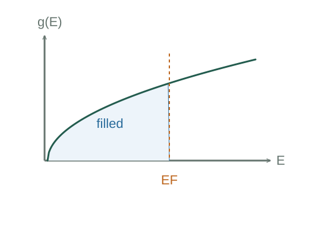

Derive the electron density of states and Fermi energy
Periodic boundaries give one k state per volume (2π)³/V. Two spin states and a spherical shell of area 4πk² yield dN/V = k²dk/π².
What the symbols mean
V: sample volume; n: conduction electrons per volume; k: wavevector magnitude; g(E): states per volume per energy including two spins.
When this applies
Three-dimensional free-electron box model with two spin states; zero temperature for EF; band-effective parameters require a suitable band model.
Developing the argument

Count wavevector cells
Periodic boundaries give one k state per volume (2π)³/V. Two spin states and a spherical shell of area 4πk² yield dN/V = k²dk/π².
Change variable from k to energy
For nonrelativistic free electrons E = ℏ²k²/(2m). Differentiate the state count with respect to E.
Fill states at zero temperature
Each state below EF is occupied and each above is empty. Integrating g from zero to EF gives n.
Use thermal occupation at nonzero temperature
Multiply available-state density by Fermi–Dirac occupation to get occupied-state density. The integral of the product gives electron number density.
A closer lookDerive Fermi–Dirac occupation ↗Why electrons follow the Fermi–Dirac occupation ruleCount carriers or relate a gap to light
If each atom contributes z mobile electrons, use atom count ρmassVNA/Mmol. A direct radiative transition of energy Eg emits a photon hc/λ = Eg in the simple gap model.
A worked example
At zero temperature doubling n increases this free-electron EF by 2²ᐟ³, about 1.59.
Derivation behind this calculation ↗A point to keep straight
Available states and occupied states differ. A band-gap photon estimate also needs the relevant optical transition and material conditions.
Check the assumptions and derivation ↗